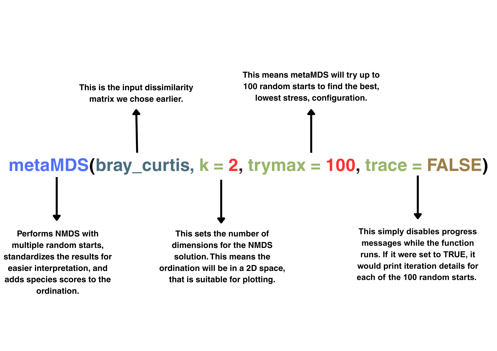
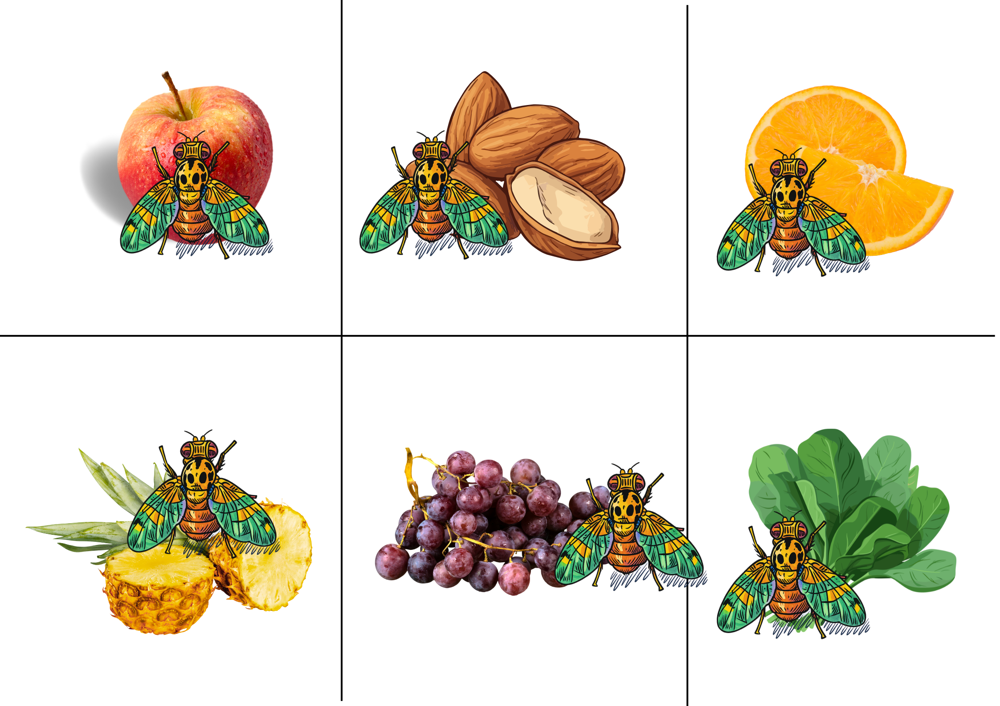
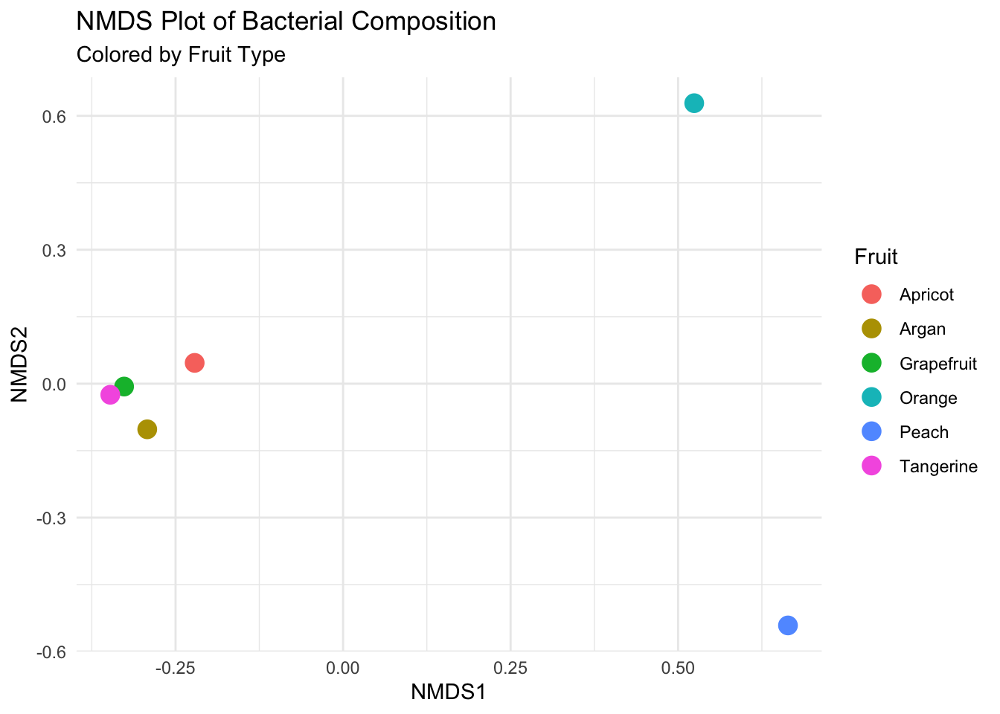

Non-metric MultiDimensional Scaling
A background to NMDS
What is NMDS?
NMDS (Non-metric Multidimensional Scaling) is an ordination technique, which is used to visualise similarities or dissimilarities in data. NMDS is used to reduce the dimensionality of complex data sets, (i.e the abundance of microbes across different sites), to allow for visualisation in a 2D space, (although this can be 3D). Unlike PCA, NMDS is a non-linear method. It doesn’t preserve actual distances between samples, but instead maintains the rank order of those distances, which is especially useful when working with complex samples, such as in ecological or microbial community data.
Ordination: Ordination is a method used to arrange or “order” samples based on patterns of similarity or dissimilarity in multivariate data. It helps reduce complex, high-dimensional data into a few interpretable axes, often for visualsation.
Similarities or dissimilarities: These refer to how alike (similar) or different (dissimilar) samples are based on measured variables. In ecological or microbial data, this could mean how similar two sites are in terms of species composition. These are often quantified using a distance matrix (e.g., Bray-Curtis, Jaccard, like discussed in a previous chapter).
Rank order of distances: This refers to the relative ordering of distances between samples, not the actual values. For example, if site A is more similar to site B than to site C, NMDS tries to preserve that order.
Deep Dive into Non-metric Multidimensional Scaling
What does it mean if something is rank-based?
In a rank-based method like NMDS, the actual numerical distances between samples are not used directly. Instead, the method focuses on the order (or rank) of dissimilarities, i.e., which samples are more similar or more different relative to others.
This means that the specific values in the distance matrix are converted to a ranked list, and the ordination tries to preserve that ordering in low-dimensional space. For example, if Sample A is more similar to B than to C, NMDS will try to place A closer to B than to C, regardless of the actual distance values.
This approach makes NMDS more flexible and robust to differences in scaling, especially when dealing with ecological or microbiome data that are often noisy.
The key steps to NMDS:
Calculate a dissimilarity matrix
Use a dissimilarity measure (e.g., Bray-Curtis) to quantify differences between all sample pairs based on multivariate data (e.g., species abundance).Rank the dissimilarity values
Convert the dissimilarity matrix into ranked distances, from most similar to least similar.Initialise with random coordinates
I an a new 2D space, put samples at random starting positions in a low-dimensional space.Calculate Euclidean distances
Measure the Euclidean distances between all pairs of these random points in the reduced space.Rank the Euclidean distances
Rank these distances like done with the original dissimilarity differences in Step 2.Compare ranked distances using Kruskal’s stress
Use Kruskal’s stress function to compare the ranked dissimilarities with the ranked Euclidean distances. This metric quantifies how well the configuration preserves the order of the original dissimilarities.Iteratively minimise stress
Adjust the configuration repeatedly to minimise stress. If the stress is too high, this will be repeated new random configurations.Obtain the NMDS solution
The configuration with the lowest stress provides the final NMDS scores — a best-fit representation of the rank-based dissimilarities in reduced space.Visualise the results
Plot the NMDS scores in 2D (or 3D) space, where the distance between points reflects the relative dissimilarity between samples.
NMDS in action
To create an NMDS plot for data visualisation, we first need to perform a dissimilarity analysis. In Beta Diversity Analysis, we calculated the Bray Curtis dissimilarity, so let’s start by replicating that to see how Bray Curtis can be calculated directly in R.
In the Beta Diversity chapter, we calculated dissimilarity using a smaller data set of two samples:
Sample 1 - Medfly from Morocco (Argan 🌰)
Bacterial composition (relative proportions):
| Bacterium | Proportion |
|---|---|
| Klebsiella | 0.75 |
| Pantonea | 0.15 |
| Commensalibacter | 0.10 |
Sample 2 - Medfly from Greece (Peach 🍑)
Bacterial composition (relative proportions):
| Bacterium | Proportion |
|---|---|
| Klebsiella | 0.25 |
| Pantonea | 0.50 |
| Serratia | 0.05 |
| Spinghobacterium | 0.15 |
For the purpose of demostrating how we can calculate Bray values in R - we will first put all these values into an R dataframe, and use the Bray Curtis method "bray" from the vegdist() function, from the vegan() package.
⚠️ Please Note: The vegist() function with Bray-Curtis dissimilarity ("bray") requires no row names in the data frame. To avoid errors, we’ll keep track of sample order manually and omit row names in the dataframe.
# Putting together the data frame without the fruit names.
bacteria_df <- data.frame(
Klebsiella = c(0.75, 0.25),
Pantonea = c(0.15, 0.50),
Commensalibacter = c(0.10, 0.00),
Serratia = c(0.00, 0.05),
Spinghobacterium = c(0.00, 0.15))
# Using `vegdist()` with our df, and bray curtis for analysis.
bray_curtis <- vegdist(bacteria_df, method = "bray")
# Putting our result back into a matrix, re-adding the fruit names to the rows and colums.
bray_curtis_matrix <- as.matrix(bray_curtis)
fruit_names <- c("Argan", "Peach")
rownames(bray_curtis_matrix) <- fruit_names
colnames(bray_curtis_matrix) <- fruit_names
bray_curtis_matrix Argan Peach
Argan 0.0000000 0.5897436
Peach 0.5897436 0.0000000If you can remember, in Beta Diversity Analysis: we calculated the Bray-Curtis Dissimilarity for these bacteria across these two samples, to be 0.6, our R output shows the value to be 0.589 - which is somewhat similar. So we are on track, and we at least know how to calculate dissimilarity!
Now, since one of the key purposes of NMDS is to reduce complex multivariate data into a simple 2D representation, let’s scale things up by bringing in more samples from the Darrington et al. (2022) dataset.
| Fruit | Klebsiella | Acinetobacter | Pantoea | Pseudoxanthomonas | Serratia | Stenotrophomonas | Delftia | Burkholderia | Sphingomonas | Bacillus | Sphingobacterium | Mycoplasma |
|---|---|---|---|---|---|---|---|---|---|---|---|---|
| Apricot | 80% | 10% | 0% | 0% | 0% | 0% | 0% | 0% | 0% | 0% | 0% | 5% |
| Argan | 75% | 10% | 5% | 5% | 0% | 0% | 0% | 0% | 0% | 0% | 5% | 5% |
| GF | 75% | 10% | 5% | 5% | 0% | 0% | 0% | 0% | 0% | 0% | 5% | 5% |
| Orange | 70% | 15% | 5% | 5% | 5% | 0% | 0% | 0% | 0% | 0% | 0% | 5% |
| Peach | 60% | 10% | 10% | 10% | 5% | 5% | 0% | 0% | 5% | 5% | 0% | 0% |
| Tang | 40% | 10% | 20% | 20% | 10% | 5% | 0% | 5% | 10% | 0% | 0% | 0% |
Step 1: Find the Bray-Curtis dissimilarity values
As demonstrated briefly above, if we are using R to calculate the Bray-Curtis dissimilarity values, we first want to put our data into a dataframe containing the relative abundance of our bacteria for each of the six fruit samples. As we did earlier we will use "bray" in the vegdist() function in R to calculate the Bray-Curtis dissimilarity values. Ensuring we are making a dataframe where row names have been ommited.
Apricot Argan GF Orange Peach Tang
Apricot 0.0000000 0.1000000 0.1000000 0.1500000 0.3170732 0.5348837
Argan 0.1000000 0.0000000 0.0000000 0.0952381 0.2558140 0.4666667
GF 0.1000000 0.0000000 0.0000000 0.0952381 0.2558140 0.4666667
Orange 0.1500000 0.0952381 0.0952381 0.0000000 0.2093023 0.4222222
Peach 0.3170732 0.2558140 0.2558140 0.2093023 0.0000000 0.2608696
Tang 0.5348837 0.4666667 0.4666667 0.4222222 0.2608696 0.0000000As there are many possible pairwise comparisons between fruit samples, we will have multiple Bray-Curtis values. Although the resulting matrix is symmetric and contains repeated values, it effectively shows how bacterial communities vary across different fruits. The Bray-Curtis values of 0 which are shown diagonaly, comparing each fruit to itself confirms that those samples are identical in their bacterial composition - which would make sense, seeing as it’s the same fruit!
Deep Dive into Non-metric Multidimensional Scaling
Did you notice the other 0 Bray-Curtis value?
If you are fairly mindful, you might notice that we have a Bray Curtis value of 0, across Argan and Grapefruit, this is because - if you go back to the original dataset, the composition of bacteria is the same across these two fruits. Again confirming that Bray Curtis in veg_dist() is showing us what we were expecting!
Step 2: Use the dissimilarity values to calculate NMDS.
We have now done pairwise comparisons of the bacterial composition comparing all the different fruit samples. Time to use these to calculate some NMDS stuff!
The metaMDS() function:
The
metaMDS()function performs NMDS by using multiple random starts to find a stable solution.It standardises the output for easier interpretation and adds species scores to the site ordination. While
metaMDS()itself doesn’t directly compute NMDS - when we add the relevant information inside this function, it will.We have set
k = 2because we want to reduce the data to two dimensions (simplifying the data).The
trymaxparameter, set to 100 increases the number of “random starts” to help the algorithm find a stable, low-stress solution (stress is something we will go into more detail on in a bit).Finally,
traceasFALSE, disables the messages where each random start is shown again, because we don’t need to see that 100 times.
NMDS <- metaMDS(bray_curtis, k = 2, trymax = 100, trace = FALSE)
When we run NMDS, the above is the output we get. Let’s go through it a bit!
Dimensions 2- we chose to reduce it to two dimensions (k = 2)
Stress 0 - this is a bit weird, and might indicate our dataframe is a bit too low. We will go into this a bit more later, but low stress is generally meant to be a good thing.
Stress type 1, weak ties this refers to Kruskal’s stress formula 1 and “weak ties” means few or no tied ranks
Best solution was not repeated after 100 tries Out of 100 random starts, the best solution occurred in the very first try and was not found again, this could indicate a narrow solution space.
The best solution was from try 0 That the best solution came from this suggests metric scaling already gave a perfect (or near-perfect) fit, which is rare.
Scaling: centring, PC rotation, halfchange scaling Scaling involves 3 steps to improve the interpretibility of the NMDS plot; centering shifts the data so that the origin is the center of the configuration, PC rotation rotates the ordination axes based on principal components for easier interpretation and halfchange scaling scales distances so that one unit corresponds to a 50% change in species composition, aiding ecological interpretation.
Species: scores missing: this basically shows because we are measuring differences between sites, not species…
Getting the NMDS values:
We use the NMDS output from the metaMDS() function to extract NMDS scores with the scores() function, focusing specifically on sites, as our aim is to compare species composition among Medfly populations reared on different host fruits. Since we specified k = 2, the resulting ordination is visualised in a two-dimensional space.
NMDS_scores <- (scores(NMDS, display = "sites"))
Great, we now have scores for NMDS1 and NMDS2, which represent the position of each site in the reduced 2D ordination space. However, before jumping into visualising these results, it’s worth taking a moment to understand what these axes actually represent.
Unlike principal components in PCA, NMDS axes do not have a direct linear interpretation. Instead, NMDS1 and NMDS2 are abstract dimensions that best preserve the rank-order of dissimilarities among sites. In our context, this means that sites (i.e., Medfly populations reared on different fruits) that are plotted closer together in this 2D space have more similar compositions between different sites, while those farther apart are more dissimilar.
As we just let R do it for us, we might not really understand how the Bray-Curtis dissimilarity values were used to calculate the NMDS scores - so let’s talk it through.
Step 3: Understanding how dissimilarity values become our NMDS scores.
How do Bray-Curtis dissimilarity values become NMDS scores?
While using R makes this process straightforward, it’s easy to lose sight of the underlying steps when running functions like metaMDS().
To better understand how Bray-Curtis dissimilarities become NMDS scores, let’s walk through the process in detail.

What is metaMDS() actually doing?
Step 3.1: Get the dissimilarity values.
When metaMDS() is running, it starts with the dissimilarity matrix that has been set (in our case Bray-Curtis), and converts the pairwise dissimilarities into ranks. This is because NMDS works on the order of dissimilarities, it tries to preserve which pairs are more similar or dissimilar, rather than the exact numeric values themselves.
Let’s take a step back, with some random numbers to exemplify this. Below is an example Bray-Curtis dissimilarity matrix for 4 sites. Note that diagonal entries are 0 because a site is identical to itself:
| Site | S1 | S2 | S3 | S4 |
|---|---|---|---|---|
| S1 | 0.0 | 0.3 | 0.7 | 0.5 |
| S2 | 0.3 | 0.0 | 0.4 | 0.6 |
| S3 | 0.7 | 0.4 | 0.0 | 0.8 |
| S4 | 0.5 | 0.6 | 0.8 | 0.0 |
Random Pairwise Bray Curtis Dissimilarity values for 4 Sites.
Step 3.2: Rank the dissimilarity values.
Next, metaMDS() ranks these pairwise values from most similar (lowest dissimilarity) to most dissimilar (highest dissimilarity). For example, the pair S1 and S2 has the lowest dissimilarity value of 0.3, so is classed as rank 1. While S3 and S4 have the highestr dissimilarity of 0.8, so is classed as rank 6. If you remember from the Beta Diversity chapter, in Bray Curtis 0 is most similar, while 1 is most dissimilar.
| Pair | Bray-Curtis | Rank |
|---|---|---|
| S1–S2 | 0.3 | 1 |
| S2–S3 | 0.4 | 2 |
| S1–S4 | 0.5 | 3 |
| S2–S4 | 0.6 | 4 |
| S1–S3 | 0.7 | 5 |
| S3–S4 | 0.8 | 6 |
A Ranked table of Random Pairwise Bray Curtis Dissimilarity values for 4 Sites.
Step 3.3: Put new random co-ordinates in a 2D space.
In this step, each site (or sample) is randomly assigned coordinates within a 2D space. These starting positions serve as the initial guess for the NMDS algorithm, which will then iteratively adjust them to best reflect the rank-order of dissimilarities among sites.

metaMDS() will generate random points. Credit: This image was generated in ChatGPT.
Step 3.4: Calculate the Euclidean distances between the two points.
After doing, this it will calculate the Euclidean distances between every pair of sites of these random ones. Euclidean distances just tells us “how far apart” two points are in our 2D map, and NMDS eventually wants that “how far apart” to reflect how different the original sites were based on Bray-Curtis.
For example, from the random starting configuration example shown below, you have 2D coordinates for each site. For example let’s take Site 1, and Site 2.
Site 1 is at (-0.25, 0.8)
Site 2 is at (0.48, 0.15).
\[ \begin{aligned} d &= \sqrt{(x_2 - x_1)^2 + (y_2 - y_1)^2} \\ &= \sqrt{(0.48 - (-0.25))^2 + (0.15 - 0.8)^2} \\ &= \sqrt{(0.73)^2 + (-0.65)^2} \\ &= \sqrt{0.5329 + 0.4225} \\ &= \sqrt{0.9554} \\ &\approx 0.977 \end{aligned} \] Our Euclidean distance between Site 1 and Site 2 is 0.977.
Step 3.4: We can then rank the Euclidean distances we found
| Pair | Euclidean-Distance | Rank |
|---|---|---|
| S1–S2 | 0.977 | 1 |
| S2–S3 | 0.978 | 2 |
| S1–S4 | 0.980 | 3 |
| S2–S4 | 0.986 | 4 |
| S1–S3 | 0.990 | 5 |
| S3–S4 | 1.000 | 6 |
A Ranked table of Eucledian distances for 4 Sites.
Step 3.5: Compare the Bray Curtis and the Euclidean distances ranks together.
| Pair | Bray-Curtis | Dissimilarity_Rank | Euclidean_Distance | Euclidean_Rank |
|---|---|---|---|---|
| S1–S2 | 0.3 | 1 | 0.977 | 1 |
| S2–S3 | 0.4 | 2 | 0.978 | 2 |
| S1–S4 | 0.5 | 3 | 0.980 | 3 |
| S2–S4 | 0.6 | 4 | 0.986 | 4 |
| S1–S3 | 0.7 | 5 | 0.990 | 5 |
| S3–S4 | 0.8 | 6 | 1.000 | 6 |
A Ranked comparison table of Bray Curtis dissimilarity values and Eucledian distances for 4 Sites.
To help: we can visualise this comparison in a Shephard diagram

Step 3.6: Using these ranked distances together, calculate the stress value.
With this comparison, we can then calculate a “stress” value, this measures how well the distances in the ordination match the ranked Bray-Curtis dissimilarities. One of the goal of metaMDS() is to minimise this stress.
We can calculate this stress value, with something called Kruskall’s Stress Formula:
\[ \text{Stress} = \sqrt{ \frac{ \sum_{i<j} \left( d_{ij} - \hat{d}_{ij} \right)^2 }{ \sum_{i<j} d_{ij}^2 } } \]
\[ \text{The original dissimilarity} = d_{ij} \]
\[ \text{The Euclidean distance between points} = \hat{d}_{ij} \]
To make it a bit easier, lets first put a table together so we can start plugging in the values.
| Pair | Bray-Curtis | Dissimilarity_Rank | Euclidean_Distance | Euclidean_Rank | Squared_Diff | Bray_Curtis_Sq |
|---|---|---|---|---|---|---|
| S1–S2 | 0.3 | 1 | 0.977 | 1 | 0.458329 | 0.09 |
| S2–S3 | 0.4 | 2 | 0.978 | 2 | 0.334084 | 0.16 |
| S1–S4 | 0.5 | 3 | 0.980 | 3 | 0.230400 | 0.25 |
| S2–S4 | 0.6 | 4 | 0.986 | 4 | 0.148996 | 0.36 |
| S1–S3 | 0.7 | 5 | 0.990 | 5 | 0.084100 | 0.49 |
| S3–S4 | 0.8 | 6 | 1.000 | 6 | 0.040000 | 0.64 |
In the table, the Bray-Curtis dissimilarity, Euclidean distance, and squared difference represent the components needed for calculating the numerator, for example, (0.3 - 0.977)^2 = 0.458. The denominator is based on the squared value of the Eucledian distances, in this case, 0.977^2 = 0.954529. However, the calculation will be the sum of all of these values.
numerator <- sum(comparison2$Squared_Diff)
denominator <- sum(comparison2$Bray_Curtis_Sq)
stress <- sqrt(numerator / denominator)
0.8069762[1] 0.8069762If the stress value is too high, you go back, and start some of these processes again, that is:
- Generate new random points in a 2D space.
- Measure the Eucledian distances.
- Rank the Eucledian distances.
- Compare the ranked Eucledian distances with the ranked Bray Curtis dissimilarities.
- Put these into the stress formula!
The final co-ordinates you end up with are your NMDS scores.
Deep Dive into Nonmetric Multidimensional Scaling
An inquisitive thought might be, why do we use ranks, if these aren’t used in the stress formula?
In NMDS, ranks guide the ordination even though they don’t appear directly in the stress formula. Rather than preserving exact dissimilarity values, NMDS preserves the rank order of dissimilarities, for example, which pairs are more or less similar.
NMDS then calculates the Euclidean distances between random points and compares these distances to the original dissimilarities. The key is that the rank order is maintained, not the exact distances.
Stress measures how well the fitted distances match the ordination distances. So, while all distances affect stress, it’s the ranking that shapes the configuration, ensuring the order of similarities is preserved as closely as possible.
Let’s look at a “real-life” analogy to help make sense of this process, imagine you’re a game of “Pin the Medfly on the fruit.”. In this game, each fruit represents a Bray-Curtis dissimilarity value, and the Medflies represent the Euclidean distances. Your goal is to match the rankings of the Bray-Curtis dissimilarities with the rankings of the Euclidean distances as closely as possible.

On your first attempt, the match isn’t great - your randomly placed Medflies are all over the place! The stress value is high, meaning the ranked Euclidean distances don’t align well with the ranked Bray-Curtis values. In other words, you’ve done a poor job of pinning the Medflies on the fruit.

So, you try again. You generate new random points, recalculate the Eucledian distances, rank them, and compare these ranks to the Bray-Curtis dissimilarity ranks, you try generate the stress value again - ie, you try to pin the Medfly on the fruit again! This process continues until you find a configuration where the ranks match well and your stress value is low. Thus, finally, the Medflies are now closely aligned with their fruits.
Step 4: Visualising your NMDS results!
With our NMDS scores calculated and the dimensionality of the ordination space chosen, we’re now ready to visualise the results in a plot.
A summary: what do we need for our plot?
# Let's get our bacteria dataframe again
bacteria_df <- data.frame(
Klebsiella = c(0.75, 0.25, 0.5, 0.7, 0.3, 0.75),
Pantonea = c(0.15, 0.50, 0.05, 0.03, 0.02, 0.05),
Commensalibacter = c(0.10, 0.02, 0.01, 0.01, 0.01, 0.01),
Serratia = c(0.01, 0.05, 0.01, 0.01, 0.02, 0.01),
Spinghobacterium = c(0.01, 0.15, 0.01, 0.02, 0.01, 0.01),
Acinetobacter = c(0.02, 0.01, 0.01, 0.01, 0.5, 0.01)
)
# Use metaMDS to generate the ordination with lowest stress
invisible(capture.output(
nmds <- metaMDS(bacteria_df, distance = "bray", k = 2, trymax = 100)
))
# Extract site scores
nmds_scores <- as.data.frame(scores(nmds, display = "sites"))
# Add fruit names
nmds_scores$Fruit <- c("Argan", "Peach", "Apricot", "Grapefruit", "Orange", "Tangerine")
# Plot the NMDS results
nmds_plot <- ggplot(nmds_scores,
aes(x = NMDS1, y = NMDS2, colour = Fruit)) +
geom_point(size = 4) +
theme_minimal() +
labs(title = "NMDS Plot of Bacterial Composition",
subtitle = "Colored by Fruit Type",
x = "NMDS1", y = "NMDS2")
And finally, we have our NMDS plot! We can see that Tangerine, Grapefruit and Argan have fairly similar bacterial compositions, while Peach and Apricot are more dissimilar.
NMDS - Test Yourself!
After you have generated random points in a 2D space, what is the name of the distances you measure between pairwise points.
Which of the following best describes the primary goal of Non-metric Multidimensional Scaling?
Imagine you take some Melon Flies that have been feeding on different fruits: Cucumber, Papaya, Melon, and Squash. You use 16S sequencing to analyse their microbiotas and visualise the results using NMDS. On the plot, flies from Cucumber and Papaya cluster closely together, while Melon and Squash are far apart from each other and from the other groups. What does this suggest about their microbiota compositions?
In NMDS, why do we compare the ranks of the dissimilarity matrix to the ranks of the distances in the reduced-dimensional space (e.g., Euclidean distances)?